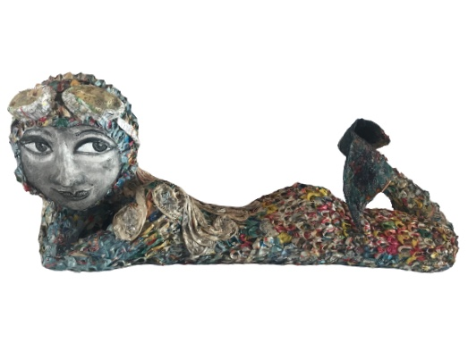

Taming the paper
Each unique piece of artwork is created using hundreds of torn pieces of paper which she tames using glue and intricate folds, sculpting her trademark idiosyncratic creations.
See my craft


A story made of paper
Fay has always had an artistic instinct and at just 10 years old she was awarded first prize for her drawing by the Mayor of the City of Mulhouse. Intrigued by theatre Fay starts acting lessons but after entering The Fine Arts of Besançon, her father opposes it exclaiming “Acting is the job of a tramp!”
Read my story
A proven artist
- 2019Tresors visibles, tqlents cqches-Luxeuil les Bqins - FR
- 2018Mermoz Gallery-Cabourg - FR
- 2017Art en Capital Grand Palais-Paris - FR Galerie Temps d'Artisans-Besan'ron - FR
- 2016Galerie Attia-Saint Pair sur mer - FR
- 2015Cabinet d'avocats LUTZ BECK GROBOCH Karlshure - Allemagne
- 2014Art en Capital Grand Palais-Paris - FR
- 2013Freiberger-Karlshure - Allemagne
- 2012Art en Capital Grand Palais-Paris - FR
